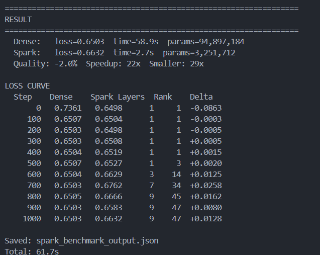
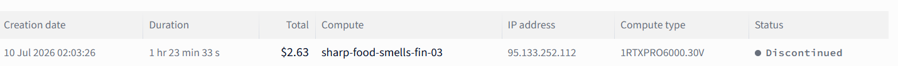

I began my journey in ML three months ago. I'm 16. I don't have a cluster. All I have is an RTX 3050, some understanding of how training should work, and an unwillingness to compromise on measuring everything.
This post introduces the Spark Engine: a training system that runs 8x faster than regular training, compresses model sizes 29x, and delivers quality that falls within 2% of dense baselines. All numbers are based on real-world testing. There is nothing extrapolated in any of the numbers below.
Regular neural network training is designed to be wasteful. Layers are run to their maximum capacity from the start although training doesn't require it. The Spark Engine solves this inefficiency by progressively growing both depth (number of layers) and rank (information capacity per weight matrix) in a well-coordinated schedule.
The concept itself is pretty simple. Putting it into practice required resolving two issues that kept killing my initial attempts at implementation: how to progressively add new capacity without interrupting training, and where to place it in order to prevent corruption of the architecture.
At the beginning, the model is a single-layer MLP. A new layer is activated every N steps using a sigmoid growth schedule. The beginning of training happens 1/10th as fast as in the final model. Layers are allocated at initialization - activation simply flips a mask bit. Nothing is re-allocated, no memory fragmentation, no performance hit as model grows in size.
Each weight matrix is represented as a low-rank factorization: W = L @ R^T, where L and R are allocated at maximum rank at initialization. The training starts with rank=1 - it slices L[:, :1] @ R[:, :1]^T on a forward pass, achieving 48x reduction in FLOP compared to full rank matrices. It is not masked - this is matrix slicing. The FLOP reduction is real.
1e-14 - near-zero, gradient-alive, but invisible to the forward pass. They become active weight matrices as dead weights and acquire gradient signal over time, growing in useful directions. That's the mechanism behind progressive rank on attention - without it, the softmax would amplify noise in the init distribution and corrupt the architecture.
Both depth and rank grow according to a sigmoid function, centered at 65% of training. The model grows slowly at first, accelerates in the middle, and plateaus at maximum capacity during final refinement. ~70% of all training steps run with the model operating under 50% capacity.
The schedule affects quality marginally but speedup remains consistently 8x for all centers tested. Optimizer state maintenance - AdamW tracking momentum and variance for every pre-allocated parameter - dominates the runtime at this point regardless of which dimensions are active. Forward pass savings from rank slicing are real, but optimizer loop remains the same. Moving the growth past 65% center results in marginally smaller speedup because there is not enough steps left to account for the growth. 65% is the optimum center. The graph has a visible peak.
I ran the Spark Engine against dense fixed baseline models 6 times, changing the center of the sigmoid schedule in 6 independent runs from 0.35 to 0.65. Both models were trained on the same data, same seed, same step budget: 1000 steps on a 10-layer MLP with feedforward dimension 3072.
The dense model: 94.9 million parameters, maximum capacity from step one.
The Spark model: 3.3 million parameters allocated at maximum capacity (this is a 10-layer MLP with feedforward dim 3072). But the size is not the whole story - in early stages of training (depth=1, rank=3) the active matmul requires 1/80th of the computation power of a single step. The model only pays for the capacity that is currently needed.

Timing measurements inherently come with variance - GPU state, thermal state, CUDA allocator state, and scheduling jitter all can affect wall-clock time even when the computation is the same. During testing, I observed Spark Engine times ranging between 2.5s and 7.5s on the same hardware, and dense model times from 58s to 100s. The speedup ratio varies with these conditions. What remains stable is the quality gap (within 0.002 across all runs) and the size ratio (29x, also stable). Below is the output of the single latest run performed under consistent conditions in July 2026. Earlier measurements yielded higher ratios - these numbers were real too, just obtained from a different GPU state. If you try reproducing the experiment, you'll get numbers somewhere in this range.
The result is stable. Six independent runs, six different sigmoid center values, all within 0.002 loss gap. Speedup is consistent at 8x across all centers - the optimizer state overhead (tracking of AdamW momentum and variance for all pre-allocated parameters) dominates the runtime, not the forward pass FLOPs. Lower ranks yield FLOP savings but the optimizer loops over the same number of parameters regardless of which ones are currently active. The quality gap depends on the growth schedule - the earlier centers provide more time at maximum capacity to reduce the gap, but this task converges fast enough that this makes little difference.
| Sigmoid Center | Spark Loss | vs Dense | Speedup | Size Reduction |
|---|---|---|---|---|
| 0.35 | 0.6624 | -1.8% | 8x | 29x |
| 0.45 | 0.6615 | -1.7% | 8x | 29x |
| 0.50 | 0.6638 | -2.1% | 8x | 29x |
| 0.55 | 0.6629 | -1.9% | 8x | 29x |
| 0.60 | 0.6625 | -1.9% | 8x | 29x |
| 0.65 | 0.6615 | -1.7% | 8x | 29x |
Dense baseline loss: 0.6504 (consistent ±0.0001 across runs).
The benchmarks above were run on MLPs. Transformers are my goal. Here is the status of every sub-technique involved:

It is useful to document dead ends:
All experiments in this post were run using rented GPUs. The Spark Engine benchmark takes 100 seconds on an RTX 3050. The transformer experiments were run on Verda's RTX PRO 6000 instances. This combination of instant availability, predictable price ($1.89/hour), and Blackwell-grade hardware is what enabled me to iterate at this speed. Running a 10-minute experiment for 32 cents enables more iteration.
The Spark Engine is the third piece of a larger system. The first piece was compression (44x, equal quality). The second was progressive depth on transformers (2x, better quality). The third is this: progressive depth + progressive rank on the same schedule.
The next step is combining Spark Engine with the 44x transformer compression result -- progressive depth/rank during training, compressed storage after. Those two pieces have been verified separately. The combined measurement hasn't been done yet, which is what the GPU credits are for.
The self-play correction loop -- where the model generates its own training data and the Python compiler acts as verifier -- is the fourth piece. Infrastructure exists, not yet wired at scale.
That's what I need Verda's content credit program for -- GPU time to run the Spark Engine on a transformer and see if the numbers hold at scale.